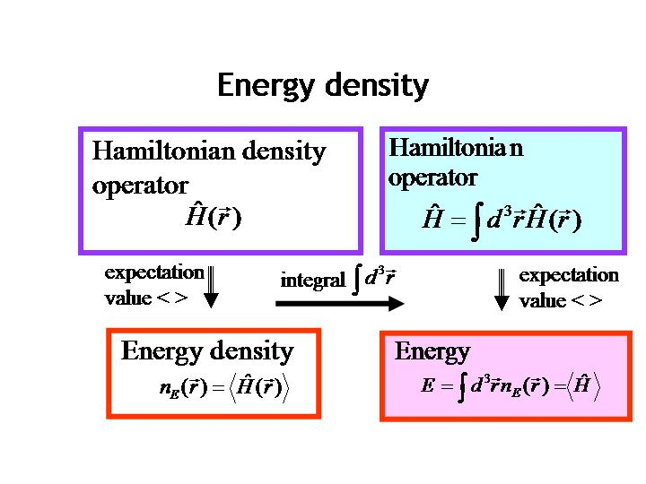
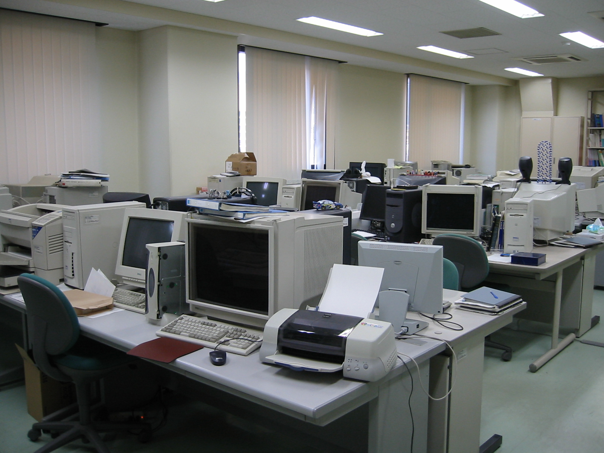

| ナノ・バイオ・非平衡系に応用できる量子電磁力学の世界を理論的に研究しています。 | ⇒English | |||||||||
 |
| 《研究現況》 | 立花教授の理論 | |||||||||
| 目次 | ■Meta-IRC理論■分子振動ホロノミー理論 | |||||||||
| ●スタッフ紹介 | ■分子超伝導理論■量子非平衡熱力学理論 | |||||||||
| ●在学生一覧 | ■領域密度汎関数理論■量子エネルギー密度 | |||||||||
| ●卒業生一覧 | ■Rigged QED (Quantum Electrodynamics) 理論 | |||||||||
| ●研究のページ（1998年以降） | ■量子スピン渦理論 | |||||||||
| ●講義資料 | ■アルファ振動子理論 | |||||||||
| ●イベント | ⇒専攻 ⇒京都大学 | |||||||||
| ●共同研究・外部資金 | 〒６１５−８５４０ 京都市西京区京都大学桂C3棟b1S09室 | |||||||||
| ●役職 | 京都大学大学院 工学研究科 マイクロエンジニアリング専攻 | |||||||||
| ●表彰 | ナノサイエンス講座 量子物性学分野 | |||||||||
| 教授 立花明知 | ||||||||||
| PHONE & FAX +81-75-383-3670 | ||||||||||
| E-MAIL akitomo.tachibana.v36@kyoto-u.jp | ||||||||||
| (Last updated on 10 Jan. 2017) | ||||||||||
| (Copyright 1998-2017, Tachibana Laboratory, All rights reserved) | ||||||||||